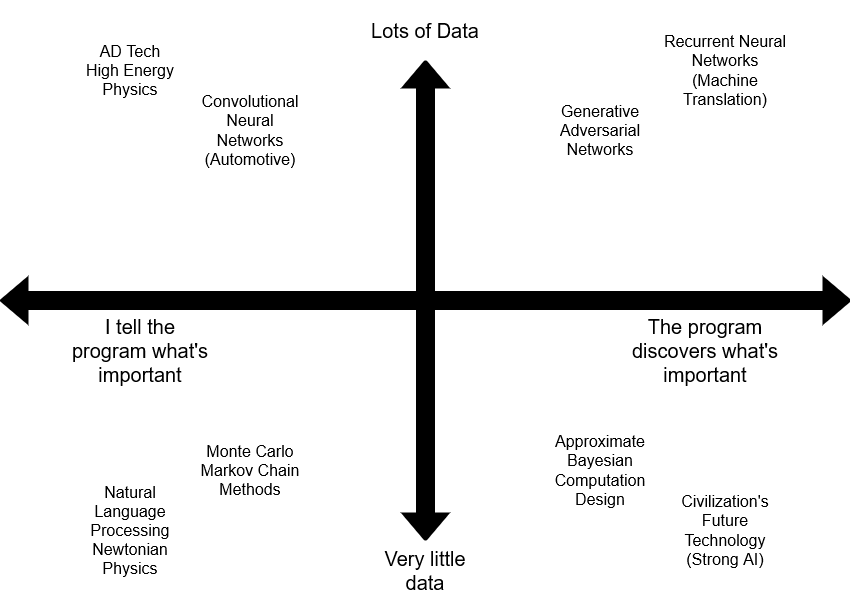

Notes on Machine Learning and Level Generation
- Overview
- Existing Examples
- Mainstream Commercial Games
- Some Key Researchers
- Influential Demos
- Major Techniques for Level Generation
- Highlights
- Implementation
- Related Work
Overview
I recently started exploring potential applications of machine learning in procedural generations tool and came across this talk given by Ben Berman from the 2017 Roguelike Celebration. Below are some notes I took while watching.
Machine Learning: Teaching computers using data
- Performance is constrained by data and out ability to communicate what is important to the computer.

Existing Examples
Caves of Qud
- Uses a Monte Carlo Markov Chain method (MCMC) with “local similarity” (and other) constraints to generate game levels based on a mix of examples and heuristics.
Botnik
- Use a mix of natural language processing tools, “character RNNs” trained on example text, human-specified constraints and human intervention to create mock television scripts, Wikipedia articles, postcards and memes.
Computational Flaneur
- Uses a “character RNN” to generate new poetry based on example poetry based on example poetry in response to your environment.
Max Kreminski’s past bots and microsites use NLP, related MCMC methods and a huge number of heuristics to make comedy and poetry.
Darius Kazemi’s various bots have hijacked natural language processing software like ConceptNet to generate comic tweets and memes.
Ian Holmes’s games and microsites use cellular automata and heuristics and to generate game levels, visuals and text.
Mainstream Commercial Games
- Unsupervised learning techniques used to analyze the client’s UX for League of Legends
- Supercell’s Clash Royale matchmaking widely believed to use, in part, a generalized linear model that considers various player features besides skill level. Not known if the parameters are learned.
- Blizzard institutionalized “pity algorithms” in many loot box mechanics with learned parameters.
- Many free-to-play studios deploy machine learning for ad tech based on a Bayesian customer lifetime value model first outlined in 1987.
- Many virtual slot machines and in-app purchases are optimized using MCMC models.
Takeaway: The research is way ahead of commercial games
Some Key Researchers
- Michael Mateas: Applies many methods, especially recurrent neural networks, with publications on level generation for platformers.
- Julian Togelius: Also applies many methods, especially RNNs, to content generation.
- Dan Ritchie (Ex-Pixar Technical Director): Monte Carlo methods in graphics, comprehensive thesis on probabilistic programs and accessible read.
Influential Demos
- The Unreasonable Effectiveness of Recurrent Neural Networks: Andrej Karpathy’s blog post demonstrating RNNs as content generators. Enormously influential on level generators (and lots more).
- WaveFunctionCollapse: A texture synthesis technique immediately used to generate game levels.
- Phase-Functioned Neural Networks for Character Control: Realistic skinned character animation for arbitrary height map levels.
- DeepDream (or PixelCNN): Neural network-based image and texture synthesis techniques.
Major Techniques for Level Generation
- Texture synthesis: Treat the level as a 2D image. Based on original, good levels you designed by hand, learn patterns on a micro and macro scale, then smartly mix these patterns to make them hard to distinguish from the originals.
- Recurrent neural networks: Treat the level as something that you explore over time. Later parts of the level depend on earlier parts, and some fuzzy picture of the whole.
- Monte Carlo Markov Chain design, specifically Hamiltonian Monte Carlo inference: Choose some measurements (design constraints) that are important to you, and learn the values of those measurements from good levels you designed by hand. Then randomly generate levels, tweaking parameters until you get similar measurements
Highlights
WavefunctionCollapse
EPC2018 - Oskar Stalberg - Wave Function Collapse in Bad North
EPC2018 - Oskar Stalberg - Wave Function Collapse in Bad North
Started with a layout of what a city tile-scape should look like.
Can be edited by selecting blocks to remove and the layout will automatically update with a suitable alternative.
Has constraints like certain tiles can only be adjacent to certain tiles.
Looks at other examples of what city tile-scapes should look like.
Adam Summerville’s Mario level generator
Super Mario as a String: Platformer Level Generation Via LSTMs
Super Mario as a String: Platformer Level Generation Via LSTMs
Text representation of a level and the understanding that future parts of the level are somehow related to past parts.
Did not know any of the game rules
Daniel Holden et. al.’s neural network animated character (2017)
Specify a target trajectory with game controller and the model synthesizes a series of motions that follows that path.
- Phase Extraction: Augments the learning process with the timing information of a given motion.
- Helps the model learn both periodic motions and when these motions start and end.
- Trained model takes very little memory and runs in real-time
- Accomplishes smooth walking, running, jumping, climbing motions and more.
- Phase Extraction: Augments the learning process with the timing information of a given motion.
GDC 2018 Character Control with Neural Networks and Machine Learning
GDC Talk
Presentation slides
Two Minute Papers (2017)
Real-Time Character Control With Phase-Functioned Neural Networks
Daniel Ritchie’s spaceship generator
- User provides a blocked out shape for spaceship and it generates finer detail versions
- PhD Thesis: Probabilistic Programming for Procedural Modeling and Design
Making it home, MCMC-based room layout
- Place objects in room and use interior design logic to organize the objects in an appealing way
- Tile-based
Implementation
- Tips and trick to get working ML-based level generators fast
- Objective:
Make something that looks like it was made by hand, not by a computer
How does this contrast with heuristic approaches to level generation?
The Heuristic Approach
- Extremely time-consuming
- Example: Cloudbery Kingdom
- Took three years and thousands of man-hours
- Levels still look like they are made by a computer
- Example: Cloudbery Kingdom
- Extremely time-consuming
- Focus on what makes things look like they were made by people
- Computer-made Feel: random placement
- Hand-Made Feel: Symmetry in Architecture
- Symmetry is really simple
- \[ $-f(x)=f(-x)$ \]
- Symmetry is really simple
- Computer-made Feel: Overly Precise Numbers
- Hand-Made Feel: Small Numbers
Modeling: A roguelike level is a 1D platformer in disguise
- Generating linear paths is easier than multidimensional geometry and increases the number of machine learning techniques you can use
- 2D levels can be expressed as multiple 1D levels
Data: Rip level data from existing Unity games using DevXUnity Pro
- Colossal amount of content unlocked from the Google Play store
- Always Google for mods for a game with rich data
- Data: Successfully Extracted
- Rolling Sky (Unity)
- Wayward Souls (Apportable)
- Hotline Miami, Hotline Miami 2 (GameMaker)
- Botanicula (Adobe AIR)
- Geometry Dash (Cocos 2D)
- RNN/CNN approaches don’t need higher level data, seems to work on raw Geometry Dash levels anyway
- Hexadecimal data
Useful Libraries: Try to find an implementation of your approach of choice in TensorFlow/PyTorch (more so PyTorch these days)
- Most research is done using PyTorch now
Implementation: LSTM models
- Best supported, highest research interest (in 2017)
- Training models to produce reliably high-quality results in real-time applications is challenging and time consuming
- Character-based RNN (LSTM) models have been really successful
- LSTMs take a big chunks of level and try to predict the “next tile”
- As you show an LSTM chunks, it “remembers” something about which tiles were adjacent to eachother.
- Loss function: A score of how well the system is learning to predict the “next tile” given it memory and the previous tiles.
- The objective is to minimize loss, because loss is the inverse of the score
- LSTM models are really buggy online (2017)
- Accidentally sharing cell states: Many public implementations of “character RNNs” use the same instance of a “cell” object in every layer. This happened because someone started with broken code and adapted it.
- Solution: Don’t use anything more than 6 months old if you are not sure how to read the model.
- Fixes convergence issues since this is a colossal bug.
- “Chunks”: Nearly every public implementation divides your source level data into chunks whose borders may or may not be the actual start and end points of a level
- Bad Encoding: Every Character RNN tool just treasts each character as a class. For levels, this can result in a lot of noise.
- Solution: Semantically-Balanced Hierarchical Encoding. Categorize each tile into a binary string of “traits” (e.g. piece of text), where each trait has real semantic meaning.
- Train an RNN on each binary “view” of your tiles (like a black and white image), then train feed forward networks on for important traits. \(x_1 = f(x_i \ \epsilon \ traits : i \neq 1)\)
- Some experiments saw a 20x improvement in loss Training was immensely faster.
- Definitely sensitive to your choice of traits.
- Note: models do not work with rarity very well
- Reward tiles are so rare that you’d need a huge corpus just to learn where they appear
- Tend to implement convolutions to reinterpret the data that helps the model learn
- Noise: Character RNNs produce incredibly noisy results
- Solution: Denoise your level as though it was a texture.
- Non-local SSIM (Structural Similarity Index) denoiser works really well for some level textures
- SSIM increases (higher is better) as noisy chunks move towards border, while MSE (Mean Squared Error) stays the same
- Or: Include a noise measurement as a part of your loss function, treating some symmetrical part of the level as your “clean” example.
- Idea: Use the mirrored half of the level for your comparison. Denoising and symmetry in one go.
- Results are still preliminary (2017)
- Performance is Poor: Seems to take a long time to train models. (2017)
Functional game content, like spells and abilities, is the holy grail
- Spellsource:
- A free, open-source fully-hosted multiplayer card game engine for experimentation
- A feature-complete implementation of the Hearthstone ruleset with all 1,312 cards